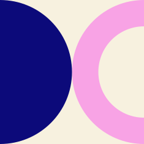
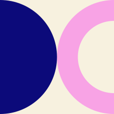

Your project might be one of the following:
Design and implement a new social computing system or
intervention motivated by prior literature.
Conduct an empirical evaluation of a new prototype of a
social computing system or intervention.
Perform a qualitative or quantitative analysis to
understand people’s problems or impressions of an existing
social technology, and produce implications for design of
new technology.
Conduct a critical analysis of existing social
technologies or academic literature in social computing
through the application of theory, to produce design
recommendations for new technology.
In a quarter-long team or individual project, you'll conduct a
research project that furthers our understanding of social
computing system design. You are not expected to produce
publishable work in the course of this quarter; however, the
work should tackle an interesting research question that could
be expanded to become publishable work after the quarter is
over. If you have an ongoing research project that might
relate to the topics in this course, connecting to your
research is encouraged.
At the conclusion of the project, your team will be
responsible for writing a short research paper that summarizes
the project.
It should be 4-6 pages long (not including
citations) in the style of an ACM CHI or
CSCW posters or late-breaking work paper, using
the single-column ACM template that is the same as for full
papers at CHI (NOT the landscape CHI EA
template).


 
